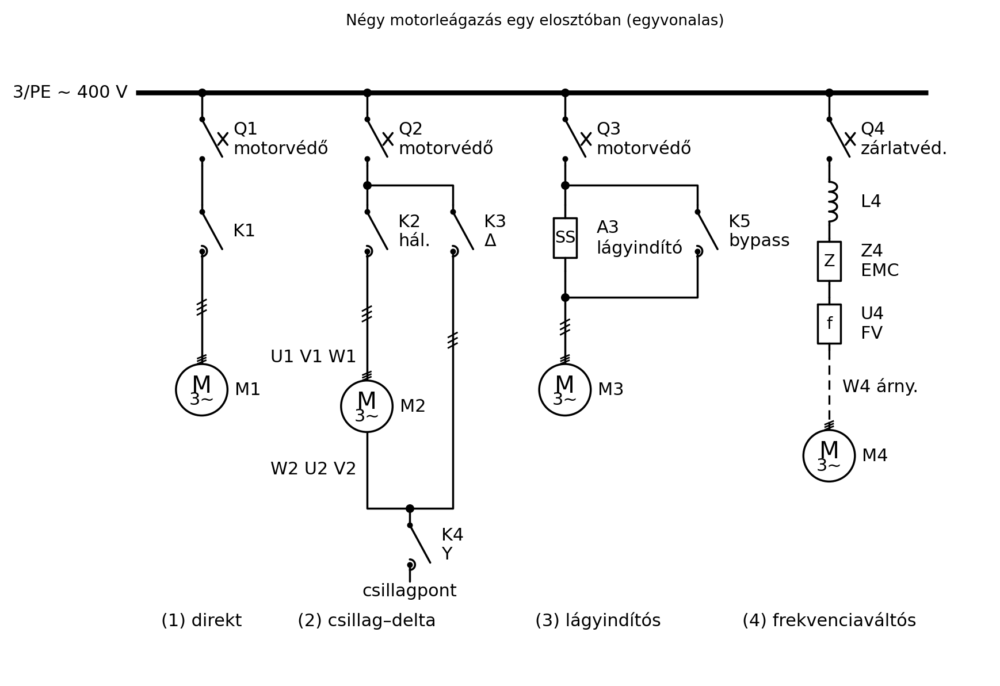
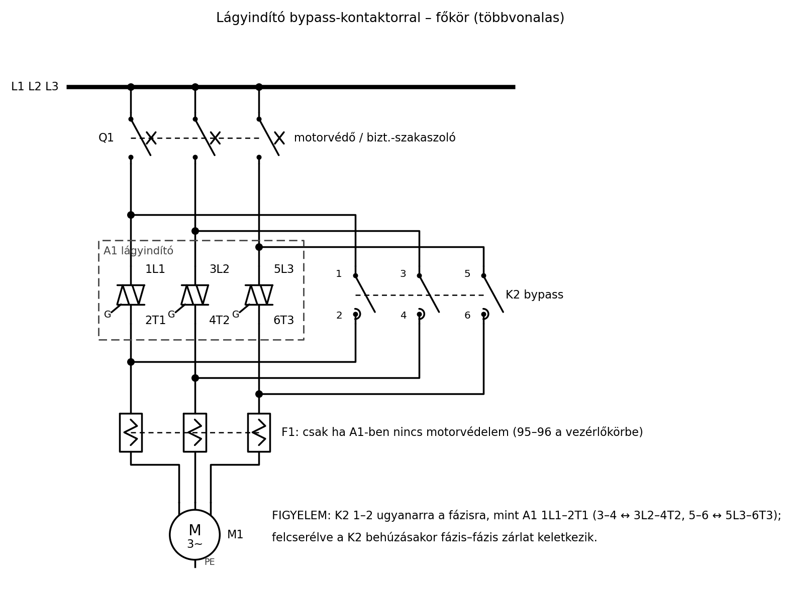
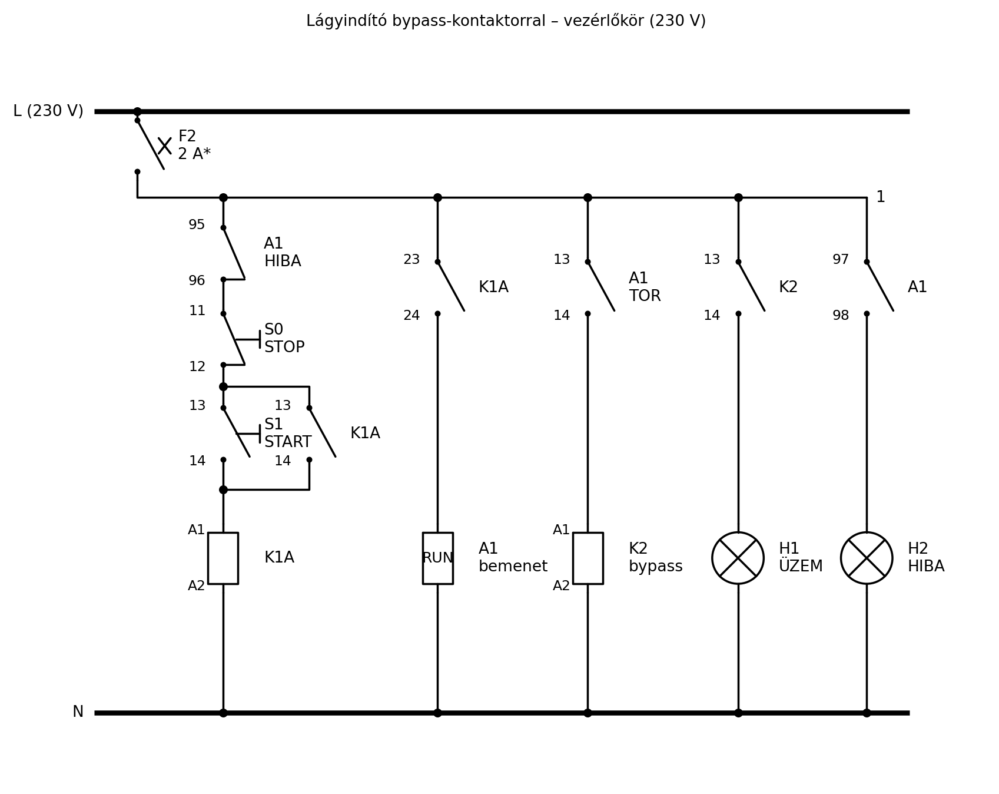

![Frekvenciaváltós motorleágazás elvi kapcsolása (egyvonalas) - Egyvonalas ábrázolás: a fővonal a három fázisvezetőt egyetlen vonalként jelzi (3~). Q1 kismegszakító (zárlatvédelem), L11 választható hálózati fojtó, Z1 EMC-szűrő közvetlenül a váltó előtt, U1 frekvenciaváltó, W1 árnyékolt motorkábel, M1 motor. A PE külön vezetőként a PE-sínről a szűrő, a váltó és a motor testéhez fut; a motorkábel árnyékolása mindkét végén körkörösen (360°) a PE-hez csatlakozik. Ha a gyártó félvezető-védő biztosítót ír elő, az Q1 helyett/mellett a váltó bemenetén áll. A vezérlő- és biztonsági áramkörök nincsenek a rajzon.](assets/ve127-diagram-1.png)
Képzeld el, hogy egy ipari elosztószekrényt szerelsz, amelyben egy szivattyúmotort frekvenciaváltóról kell járatni. A terv szerint a betáplálás, a kismegszakító, a váltó és a motorkábel is rendelkezésre áll. Bekötöd a készüléket, a motor elindul, de a szomszédos PLC-analóg bemenet értéke „ugrálni” kezd, vagy a váltó túlmelegedési hibát jelez néhány fordulat után. Az ilyen jelenségek nagyon gyakran nem a készülék hibájából, hanem abból fakadnak, hogy a frekvenciaváltót, a lágyindítót és a motorvédelmi láncot nem az erősáramú, EMC- és földelési szempontok szerint építették be és kábelezik. Ebben az alfejezetben azt tanulod meg, hogyan kell egy motorvezérlő elosztót úgy kialakítani, hogy a motorvédelmi funkciók, a frekvenciaváltó és a lágyindító együttműködjenek, a vezérlés stabilan működjön, és a telepítés megfeleljen a szabványoknak.
Az alábbi egyvonalas rajz egy frekvenciaváltós motorleágazás elvi felépítését mutatja. A leágazás zárlatvédelmét a Q1 kismegszakító adja, a váltó bemeneti oldalán EMC-szűrő és választható hálózati fojtó található, a kimeneti motorkábel árnyékolt, és az árnyékolás mindkét végén a védővezetőhöz csatlakozik. A PE külön vezetőként, kapcsolókészülék nélkül jut el a szűrő, a váltó és a motor testéhez.
A rajz a motorleágazás erősáramú oldalára koncentrál. A valóságban a vezérlőkapcsok (start, stop, hibajelzés, analóg alapjel) külön, árnyékolt vezérlőkábelen érkeznek, és azokat az erősáramú motorkábeltől elkülönítetten vezetik.
Definíció. A motorvezérlő elosztó (motorvezérlő fiók) olyan kapcsoló- és vezérlőkészülékeket tartalmazó egység, amely egy villamos motort a hálózatra kapcsol, véd, indít/leállít, terhelés szerint szabályoz, és a vezérlőrendszerhez csatlakoztatható. A motorvezérlő elosztó része lehet közvetlen (direkt) indító, lágyindító vagy frekvenciaváltó.
Definíció. A frekvenciaváltó (VFD, Variable Frequency Drive) olyan teljesítményelektronikai átalakító, amely a hálózati feszültséget egyenirányítja, majd a közbenső egyenáramú körből változtatható frekvenciájú és effektív értékű, impulzusszélesség-modulált háromfázisú feszültséget állít elő a motor számára. A frekvenciaváltó a motor fordulatszámát folyamatosan, veszteséges mechanikus elemek nélkül szabályozza.
Definíció. A lágyindító (soft starter) olyan indítókészülék, amely a motor feszültségét az indítás alatt fokozatosan növeli, általában tirisztorok segítségével, így csökkenti az indítási áramlökést és a mechanikai nyomatéklökést. A lágyindító jellemzően nem változtatja a frekvenciát, és a motor üzemszerűen a hálózati frekvencián fut.
Ábraolvasás. A felső grafikon a hálózati áramot, az alsó a motornyomatékot mutatja a névleges érték arányában, szemléltető, idealizált görbékkel. A lágyindító az áramot a kapocsfeszültséggel arányosan csökkenti, a nyomaték viszont a feszültség négyzetével arányos (): 40 %-os kezdőfeszültségnél az áram kb. 2,6·, a nyomaték azonban csak kb. a direkt indítás 16 %-a. A frekvenciaváltó a feszültséget és a frekvenciát együtt növeli, ezért névleges áram közelében is névleges körüli nyomatékot ad. A HTML-kiadásban az egyes görbék ki-be kapcsolhatók, és csúszkával állítható a lágyindító kezdőfeszültsége (30–70 %) és rámpaideje (2–20 s).
Szabály. A motorvédelmi lánc elve: a hálózati oldali zárlatvédelmet, a túlterhelés elleni védelmet és a hővédelmet egymástól meg kell különböztetni. Egy korszerű motorvédelem általában a következő rétegeket foglalja magában:
Definíció. A PTC-termisztor (Positive Temperature Coefficient, pozitív hőfoktényezőjű ellenállás) olyan hőmérsékletfüggő ellenállás, amelynek ellenállása egy bizonyos névleges hőmérséklet közelében hirtelen meredeken megnő. A motor hővédelme a tekercsekbe épített PTC-láncot figyeli, és ha a mért ellenállás átlépi a határt, a vezérlés letiltja a motort.
Egy elosztóban a négy indítási mód leágazásai gyakran egymás mellett állnak. Az alábbi egyvonalas rajz közös gyűjtősínről mutatja őket, hogy összevethesd: melyik készülék ad zárlatvédelmet, melyik túlterhelés-védelmet, és hol kapcsol a kontaktor.

| Leágazás | Zárlatvédelem | Túlterhelés-védelem | Motor hővédelme | Jellemző hiba |
|---|---|---|---|---|
| (1) direkt: Q1 – K1 – M1 | Q1 motorvédő kapcsoló | Q1 (beállított Ir = In) | opcionális PTC-relé | nagy indítási áramlökés, a Q1 indításkor kiold, ha a kioldási jelleg nem illik a motorhoz |
| (2) csillag–delta: Q2 – K2/K3/K4 – M2 | Q2 | Q2 vagy külön hőkioldó a motor-fázisáram ágában (≈ 0,58·In-re állítva) | opcionális PTC-relé | rossz delta-hidak, túl rövid átkapcsolási idő, rosszul beállított hőkioldó |
| (3) lágyindítós: Q3 – A3 ∥ K5 – M3 | Q3 (a gyártó szerint félvezető-védő biztosító is kellhet) | A3 elektronikus túlterhelés-védelme vagy külön hőkioldó | PTC az A3 bemenetén | K5 fázissorrend-hiba, bypass indítás közben behúz |
| (4) frekvenciaváltós: Q4 – L4 – Z4 – U4 – W4 – M4 | Q4 (a gyártói ajánlás szerint) | U4 elektronikus hőmodellje | PTC az U4 bemenetén | árnyékolás-hiba, kapcsolás a váltó kimenetén, STO-t leválasztásnak hinni |
Az indítási módok áram- és nyomatékoldali összehasonlítása az Indítás: közvetlen, csillag–delta, lágyindító, csúszógyűrűs, a direkt, reverzáló és Y-Δ vezérlések megépítése a Vezérlések építése: direkt, reverzáló, Y-Δ alfejezetben található; a választás lépéseit a Döntési fa: melyik indítási módot válasszam? rész adja. Ellenőrző kérdés: melyik két leágazásban nincs a motornak saját hőkioldója, és mi veszi át a szerepét?
Szabály. A frekvenciaváltó beépítésekor az alábbi szempontokat mindig ellenőrizni kell:
Összefüggés. A frekvenciaváltó bemeneti áramát a motor tengelyteljesítményéből és a hatásfokból becsülhetjük, de fontos megérteni, hogy a bemeneti áram a hálózati oldali áram, a kimeneti áram pedig a motoráram; ezek a közbenső egyenáramú kör miatt nem azonosak. A bemeneti látszólagos teljesítmény közelítőleg:
ahol a motor tengelyteljesítménye (W), a motor és a váltó együttes hatásfoka, pedig a bemeneti teljesítménytényező. A frekvenciaváltó bemeneti áramát ennek felhasználásával a hálózati oldali feszültség és a fázisszám alapján számíthatjuk. A kimeneti áramot a motor adattáblájáról olvassuk le.
Definíció. EMC (elektromágneses összeférhetőség, Electromagnetic Compatibility) alatt azt értjük, hogy egy villamos berendezés sem saját környezetében, sem más berendezésben nem okoz zavart, és más berendezések zavaró hatása ellen sem érzékeny. A frekvenciaváltó kimeneti PWM-jele gyors feszültség- és áram-átkapcsolásokat okoz, amelyek nagyfrekvenciás zavarok forrásai lehetnek.
Szabály. A frekvenciaváltó motorkábele legyen árnyékolt, lehetőleg a váltó gyártója által ajánlott, 3 fázis + PE (és adott esetben külön árnyékolt mag) kialakítású. Az árnyékolás földelését a váltó oldalán és a motor oldalán is 360°-os körbefogással kell elvégezni, azaz az árnyékolót a kábelbevezető fémezett karmantyúján, a készülék fém házán vagy az árnyékoló sínre bilincselt, teljes kerületén érintkező rögzítéssel kell leföldelni. A 360°-os árnyékolás azt jelenti, hogy az árnyékoló szalagot vagy fonott rézharisnyát körben, hézagmentesen kötjük a földpotenciálhoz, nem pedig csak egy ponton „sertésfarok” módon.
Szabály. A frekvenciaváltó és a motor közötti kábel hossza legyen a lehető legrövidebb. A gyártói előírások és a szűrőfokozatok határozzák meg a megengedhető hosszt. Túl hosszú, nem árnyékolt kábel esetén a kapcsolási felharmonikusok miatt:
Szabály. Ha a frekvenciaváltós áramkört áram-védőkapcsoló védi, a hibaáram egyenáramú összetevője miatt háromfázisú váltónál B típusú (egyfázisúnál legalább F típusú) RCD szükséges; az AC vagy A típus nem működhet megbízhatóan, mert az egyenáramú hibaáram „elvakíthatja”, vagyis a hibavédelem nem működik. A kioldási küszöböt (pl. 300 mA a tűzvédelemhez) a szivárgóáram miatt a gyártói ajánlás szerint kell megválasztani. (ellenőrizendő: MSZ HD 60364-5-53, gyártói adatlap)
Szabály. A vezérlő kábelezésben is tartsd be az EMC-elvet: a vezérlő- és jelvezetékek árnyékolt, sodrott érpárú kábelek legyenek, az árnyékolást egy ponton (általában a frekvenciaváltó oldalán) földeljük, és a vezérlő kábelt a motorkábeltől legalább 30 cm távolságra, eltérő kábelcsatornában vezessük. Ha elkerülhetetlen a keresztezés, az mindig derékszögben történjen.
Definíció. A bypass kapcsolás a lágyindító fölötti mechanikus vagy elektronikus megkerülés: amint a motor elérte a névleges feszültséget, egy kontaktor átkapcsolja a motort közvetlenül a hálózatra, a lágyindító tirisztorait áthidalja: üzem közben árammentesek, de továbbra is hálózati feszültség alatt állnak. Ez csökkenti a lágyindító melegedését, és lehetővé teszi, hogy a lágyindító csak az indítási ciklus alatt legyen terhelve.
Szabály. A lágyindító beépítésekor az alábbiakat kell betartani:
A bypass alkalmazása gyakori szivattyúknál, ventilátoroknál és kompresszoroknál, ahol a nyomatékigény az indítás után közel állandó.
Az alábbi ábra egy külső bypass-kontaktoros lágyindító beépítését mutatja a szerelőlemezen. Az 1 Q1 adja a zárlatvédelmet és a leválasztást; a fázisok innen a 4 közös bemeneten át egyszerre jutnak a 2 A1 lágyindító (1L1, 3L2, 5L3) és a 3 K2 bypass-kontaktor bemenetére. A két készülék kimenete az 5 közös kimeneten találkozik, és az 7 X1 motorsorkapocsra fut (U, V, W, PE). A K2 tekercsét a lágyindító 6 „indítás vége” relékimenete (13–14) vezérli, így a kontaktor csak teljes feszültségnél húz be. A 8 nyilak a lágyindító fölötti és alatti szabad hűtési távolságot jelölik.
Bekötéskor a K2 fázissorrendje egyezzen a lágyindítóéval (L1 a 2T1-gyel azonos kimenetre), különben a bypass behúzásakor fázis–fázis zárlat keletkezik. Sok lágyindító beépített bypass-szal készül; ilyenkor külső K2 nem kell, a gyártói bekötési rajzot kövesd. A HTML-kiadásban a részekre mutatva azok szerepe olvasható.
A szerelőlemez-ábra a készülékek helyét mutatja; az alábbi két kapcsolási rajz azt, hogyan folyik az áram. A főkörben a K2 bypass-kontaktor főérintkezői az A1 lágyindító tirisztoraival párhuzamosan kapcsolódnak: fázisonként a bemeneti (1L1, 3L2, 5L3) és a kimeneti (2T1, 4T2, 6T3) kapocs közé.

A vezérlőkörben a K1A segédrelé tárolja az indítási parancsot, az A1 a RUN bemenetén kapja meg, a K2 tekercsét pedig kizárólag az A1 „felfutás kész” (TOR, 13–14) relékimenete kapcsolja; az A1 hibarelé bontója (95–96) a teljes vezérlést letiltja.

| Lépés | Mi történik | U a motoron | K2 |
|---|---|---|---|
| 1. START | S1 → K1A behúz és önfenntart → A1 RUN | a kezdőfeszültségről (pl. 30–50 %) a rámpa szerint nő | nyitva |
| 2. Rámpa vége | A1 eléri a teljes feszültséget, a TOR 13–14 zár | 100 % | behúz |
| 3. Üzem | az áram K2-n folyik, a tirisztorok árammentesek (de feszültség alatt vannak) | 100 % | zárva |
| 4. STOP | S0 → K1A ejt → RUN megszűnik → TOR nyit, K2 ELŐBB ejt → A1 lágyleállítási rámpa | csökken 0-ig | nyitva |
Ellenőrző kérdés: a rajz alapján mi történne, ha a K2 tekercsét a K1A 23–24 érintkezője vezérelné a TOR helyett?
A frekvenciaváltó alapvetően több védelmi funkciót valósít meg, amelyeket a motor hagyományos védelmével össze kell hangolni.
Szabály. A frekvenciaváltó belső túlterhelésvédelmét a motor névleges adataihoz kell paraméterezni, például meg kell adni a motor névleges feszültségét, frekvenciáját, teljesítményét, áramát és a motor típusát (aszinkron, szinkron, reluktancia stb.). A váltó a kimeneti áram és a motor hőállapotának modellje alapján dönti el, hogy túlterhelés esetén csökkenti-e a kimeneti frekvenciát, hibajelzést ad-e, vagy letiltja a kimenetet.
Szabály. A PTC hővédelmi bemenetet (gyakran T1/T2 vagy PTC kapocs) a frekvenciaváltó vagy a lágyindító vezérlő sorkapcsán kell bekötni. A PTC-lánc ellenállását a váltó méri, és ha az ellenállás a kritikus érték fölé emelkedik, a váltó letiltja a modulációt, és hibajelzést ad. A PTC-kapcsok áramköre a motor szigetelési rendszerétől galvanikusan leválasztott kisjelfeszültségű áramkör, ezért nem köthető össze a 230 V-os vezérléssel.
Szabály. A motor külső hőreléje (bimetallos vagy elektronikus) és a frekvenciaváltó belső hővédelme közül az egyiket kell a motorra hangolni, a másikat pedig határőrként, a váltó kimeneti áramának lekapcsolására lehet beállítani. Frekvenciaváltónál a motor túlterhelésvédelmét a váltó elektronikus hőmodellje és a motor PTC-termisztora adja. Ha több motor jár egy váltóról, motoronként külön hőrelé szükséges, a váltó kimenetén, PWM-re alkalmas típussal, amely a váltó engedélyező bemenetét bontja (a hőrelé az áramot méri, ezért a váltó bemeneti oldalán nem a motoráramot látná). (ellenőrizendő: gyártói kézikönyv)
Először az öt biztonsági szabály: lekapcsolás, visszakapcsolás elleni biztosítás, a feszültségmentesség ellenőrzése (váltónál a kisütési idő kivárása után a DC- és a motorkapcsokon is), földelés és rövidre zárás ha szükséges, a szomszédos feszültség alatti részek lefedése. Tanműhelyben vagy jogosult személy felügyeletével dolgozz.
Eszköz: multiméter ellenállásmérő állásban. Tilos a PTC-láncot szigetelésmérővel (500 V) mérni: a termisztor csak néhány voltot visel el (ellenőrizendő: DIN 44081/44082, motorgyártói adat).
Külső hőrelénél a beállított áram egyezzen a motor értékével (csillag–delta indításnál, a fázistekercs ágába kötött relénél kb. ). A TEST gombbal a 95–96 érintkező bont, a 97–98 zár; ezt a leválasztott vezérlőkörben folytonosságméréssel ellenőrzöd, majd a relét visszaállítod (ellenőrizendő: a relé kezelési leírása).
| Motor | PTC, hideg | Kioldási próba | Hőrelé beállítása | Dátum, név |
|---|---|---|---|---|
| M1, 7,5 kW, 14,5 A | 420 Ω | rendben (4 kΩ → hiba) | 14,5 A, TEST rendben | … |
A fejezet eleji egyvonalas rajz csak az erősáramú utat mutatta. Egy valós leágazás bekötéséhez a tervlap kell: az alábbi kétlapos dokumentáció 1. lapja a többvonalas főáramkört (Q1 – K1 – L11 – Z1 – U1 – W1 – X1 – M1, PE külön vezetőként), a 2. lapja a váltó vezérlőkapcsait mutatja. A két lapon a készülékjelek közösek; az M1 PTC-kivezetése az 1. lapról a 2. lap 11. oszlopába fut.
![A3-as tervlap, 1. lap. Bal oldalon függőlegesen: X1 betáp L1, L2, L3, PE; Q1 háromfázisú kismegszakító (C/D, gyártói ajánlás); K1 opcionális hálózati kontaktor; L11 hálózati fojtó; Z1 EMC-szűrő PE-bekötéssel; U1 frekvenciaváltó L1–L3 bemenettel, U, V, W kimenettel, oldalt R+ és R− kapocs az R2 opcionális fékellenálláshoz; W1 árnyékolt motorkábel szaggatott árnyékolással, amely mindkét végén 360°-ban a PE-gerinchez kötött; X1 motorsorkapocs U1, V1, W1; M1 háromfázisú motor PE-vel. Jobb oldalon hét megjegyzés, köztük: K1 csak a hálózati oldalon kapcsol; STO nem leválasztás.](figures/img/ve127-5-1.png)
![A3-as tervlap, 2. lap. Felül a váltó saját +24 V-os sínje; róla S1 RUN kétvezetékes kapcsoló a DI1-re, S2 irányválasztó a DI2-re, S3 RESET nyomógomb a DI3-ra, S4 vészleállító két bontója (11–12, 21–22) az STO1 és STO2 bemenetre, B1 4–20 mA-es távadó az AI2-re. R1 10 kΩ-os potméter a +10 V és a GND között, csúszkája az AI1-re. AO1 kimenet a PLC felé, PTC1/PTC2 a motor termisztorához. Jobb oldalon 230 V-os kör: L1 – F2 – sín 1 – U1 RO1 bontó – H1 piros HIBA lámpa, illetve RO2 záró – H2 zöld ÜZEM lámpa – N. Alul az U1 vezérlő-sorkapocs sávja a kapocsnevekkel és a figyelmeztetéssel, hogy a kapocsnevek gyártónként eltérnek.](figures/img/ve127-5-2.png)
A lap olvasásakor ezekre figyelj:
Ellenőrző kérdés: a rajz alapján miért nem elég az S4 vészleállítót megnyomni, mielőtt a motorsorkapocsban dolgozni kezdesz, és melyik készüléket kell helyette kikapcsolni és lezárni?
Definíció. A hálózati fojtó (line reactor) a frekvenciaváltó bemeneti oldalára kötött induktivitás, amely csökkenti a hálózati áram felharmonikus-tartalmát, védi a bemeneti egyenirányítót a feszültségtranziensektől, és javítja a teljesítménytényezőt. Hasznos, ha a hálózat impedanciája alacsony, a váltó teljesítménye nagyobb, vagy a hálózaton sok kapcsolási művelet történik.
Definíció. A DC-fojtó a váltó közbenső egyenáramú körébe kötött induktivitás, amely a bemeneti egyenirányító kimenetén az áram simítását végzi, csökkenti a hálózati áram felharmonikus-tartalmát, és növeli a közbenső kör stabilitását. A DC-fojtó a váltó gyártói által ajánlott, a meghatározott teljesítménytartomány fölött jellemzően szükséges.
Definíció. Az EMC-szűrő (hálózati szűrő) a frekvenciaváltó bemenetére szerelt passzív szűrő, amely a váltó által keltett nagyfrekvenciás zavarok hálózatra jutását csökkenti, és a hálózat felől érkező zavarok ellen is védelmet nyújt. A szűrőt a váltó közelében, a bemeneti kábel árnyékolását a szűrő fémházán vagy a szerelőlemezen 360°-osán földelve kell beépíteni.
Szabály. A hálózati fojtó, DC-fojtó és EMC-szűrő kiválasztását a frekvenciaváltó gyártói dokumentációjában megadott ajánlások szerint kell elvégezni, a kívánt EMC-kategóriától és a motorkábel hosszától függően. A fojtók és szűrők melegedését a szekrény hűtésénél figyelembe kell venni.
Szabály. Az árnyékolt motorkábel árnyékolását mindkét végén földelni kell. A földelés legyen 360°-os, azaz az árnyékoló felület kontúrját körben érintő módon rögzítsük a földelő felülethez. Ennek leggyakoribb módja a fémezett kábelbevezető (cable gland) alkalmazása, amely a kábel kivezető nyílásánál a készülékházhoz csavarozva érintkezik az árnyékolással. Az árnyékolt kábeltípus kiválasztása: Vezeték- és kábeltípusok, jelölésrendszer. A jó árnyékbekötés a motor csapágyáramait is csökkenti; a jelenséget és a további ellenszereket (szigetelt csapágy, tengelyföldelés) lásd: Tekercselés, impregnálás, csapágyak és szénkefe.
A szekrényen belül a másik gyakori megoldás az árnyékoló (EMC-) sínre szorított bilincs. Az alábbi ábra ennek lépéseit mutatja. Az 1. panelen a bilincs helyén, a bilincs szélességében csak a külső köpenyt fejted le, a fonat ép marad. A 2. panelen az EMC-bilincs a csupasz fonatot teljes kerületén az árnyékoló sínre szorítja – ez a 360°-os csatlakozás. A 3. panelen az erek röviden a váltó U, V, W kapcsára futnak, a PE külön vezetőként a PE-kapocsra. A 4. panel a hibás „sertésfarok” bekötést mutatja: a fonatot egy vezetékké csavarták, és egy csavarra kötötték.
A sertésfarok kis frekvencián még „vezet”, de a PWM nagyfrekvenciás összetevőire nagy az impedanciája, ezért az árnyékolás gyakorlatilag hatástalan. A lefejtésnél ne vágd be a fonatot: egy-két elvágott szál még nem baj, a körben felszakított fonat már az. A HTML-kiadásban a négy kép egymás után lejátszható.
Szabály. A frekvenciaváltó és a motor közötti kábel védővezető keresztmetszete, valamint a motor védővezetője teljesítse a készülék gyártói előírásait és a kisfeszültségű villamos berendezésekre vonatkozó szabvány (MSZ HD 60364 sorozat) vezetékméretezési követelményeit (ellenőrizendő: aktuális kiadás). A PE-vezető keresztmetszetét ne csökkentsük kizárólag az árnyékolás miatt; az árnyékolás nem helyettesíti a védővezetőt.
Szabvány. A frekvenciaváltók és hajtások általános követelményeire az MSZ EN 61800 sorozat vonatkozik, amely a villamos hajtásrendszerek biztonsági, EMC- és funkcionális követelményeit írja le. Az EMC-követelményeket a hajtás telepítési kategóriája és a környezet szerint kell teljesíteni. A pontos EMC-határértékeket a gyártói dokumentáció és a mindenkori szabványkiadás rögzíti (ellenőrizendő: aktuális kiadás és a konkrét telepítési kategóriák). Az elosztóberendezésekre az MSZ EN 61439 sorozat, a kapcsolókészülékekre az MSZ EN 60947 sorozat vonatkozik; a motorvédő kapcsolókra és kontaktorokra a gyártói adatlapok és a hatályos szabványok együttesen érvényesek.
Egy ipari üzemben egy szellőzőventilátor motorját 4 kW-os, 400 V-os aszinkron motor hajtja, frekvenciaváltóval. A szerelő a váltó kimeneti kábelét árnyékolatlan, műanyag köpenyű hajlékony vezetékkel szerelte, mert az volt raktáron. A ventilátor indítása után a szomszédos épületfelügyeleti rendszer analóg hőmérsékletérzékelője téves értékeket kezdett mutatni. A hibát a nem árnyékolt motorkábel és a hosszú, közös kábeltálcán futó vezérlőkábel okozta: a PWM-kapcsolás nagyfrekvenciás zavarai bejutottak a jelkábelekbe. A megoldás az árnyékolt motorkábel, a 360°-os árnyékoláscsatlakozás a váltó oldalán, a vezérlő kábel árnyékolt, sodrott érpárú kivitelre cserélése és a kábeltálcán belüli elválasztás volt. A tanulság: a frekvenciaváltós környezetben nem elég a készülék bekötése, a kábelezést az EMC-szempontok szerint kell megtervezni.
Az árnyékolás hiánya vagy helytelen földelése. Az árnyékolt kábel árnyékolását csak egy vékony huzallal, „sertésfarok” módon kötik be, így a nagyfrekvenciás zavarok akadálytalanul kisugároznak, és a közeli jelvezetékekben indukálnak feszültséget. Helyes gyakorlat: 360°-os, körbefogó földelő csatlakozás mindkét végen.
A motor hővédelmének elhagyása. A beruházó szerint a frekvenciaváltó „tudja” a motorvédelmet, ezért a PTC-t vagy a külső hőrelét nem kötik be. Azonban a váltó belső hőmodellje nem feltétlenül ismeri a motor tényleges hőállapotát, különösen környezeti túlmelegedés vagy csapágyhiba esetén. Helyes gyakorlat: a PTC-láncot mindig kösd be, és paraméterezd a váltót a motor adatlapja szerint.
Túl hosszú motorkábel. Az árnyékolt, 360°-os csatlakozással földelt kábel ellenére a gyártói szűrőfokozat által megengedett hosszt jelentősen túllépik. Ez a motor szigetelését veszélyeztető túlfeszültségekhez és a váltó túlterheléséhez vezethet. Helyes gyakorlat: ellenőrizd a gyártói ábra szerint, mekkora maximális kábelhossz engedélyezett az adott EMC-kategóriában; szükség esetén alkalmazz kimeneti fojtót vagy szűrőt.
A bypass kontaktor rossz vezérlése. A bypass kontaktor az indítás közben, csökkentett feszültségnél behúz, így a kontaktor a direkt indítás teljes áramlökését kapcsolja. Helyes gyakorlat: a bypass tekercsét a lágyindító „indítás vége” reléje vezérelje, és csak teljes feszültségnél húzzon be.
A táblázat az elosztó- és kábelezési oldali jelenségeket veszi sorra; a váltó hibakódjaihoz lásd a Frekvenciaváltó és lágyindító paraméterezése alfejezetet. Minden beavatkozás előtt az öt biztonsági szabály, váltónál a kisütési idő kivárásával. Szigetelésmérést a váltó kapcsain soha ne végezz: a motorkábelt előbb mindkét kapocsról le kell kötni (a váltóról mindenképpen), és csak a lekötött kábelt, illetve motort mérd (a motor mérése: Diagnosztika: szemrevételezés, mérések, hibajegyzőkönyv).
| Jelenség | Valószínű ok | Mérés, ellenőrzés | Javítás |
|---|---|---|---|
| Bekapcsoláskor kiold az RCD | AC vagy A típus, túl kicsi , az EMC-szűrő szivárgóárama | típus ellenőrzése, szivárgóáram mérése lakatfogós szivárgóáram-mérővel | B típus, a gyártó szerinti |
| Bekapcsoláskor kiold Q1 | a karakterisztika nem viseli a töltőáramot, vagy zárlat a bemeneten | feszültségmentesen, a váltót lekötve szigetelésmérés a tápkábelen | gyártó szerinti karakterisztika, zárlat javítása |
| Az analóg jelek ugrálnak | sertésfarok, közös tálca a motorkábellel | szemrevételezés | 360°-os árnyékbekötés, elválasztás |
| Túláram- vagy földzárlat-hiba gyorsításkor | sérült motorkábel, hosszú kábel nagy kapacitása | szigetelésmérés a váltóról lekötött kábelen | kábelcsere vagy kimeneti fojtó, hosszabb rámpa |
| PTC-hiba hideg motornál | szakadt PTC-lánc, rossz bemenet vagy paraméter | PTC-lánc ellenállása multiméterrel, hidegen jellemzően 1,5 kΩ alatt (ellenőrizendő) | vezeték, kötés vagy motor javítása |
| A váltó túlmelegszik | elzárt hűtési távolság, eltömődött szűrő, álló ventilátor | hőmérséklet, ventilátor, szemrevételezés | a hűtés helyreállítása |
| A motor fordítva forog | felcserélt fázissorrend vagy irányparaméter | rövid próba kis frekvencián, forgásirány | U, V, W közül kettő cseréje vagy paraméter |
| A bypass behúzásakor zárlat | K2 fázissorrendje eltér A1-étől | feszültségmentes folytonosságmérés fázisonként K2 és A1 kapcsai között | átkötés a bypass főköri rajza szerint, a készülékek átvizsgálása |
Gyakorlás: ennek az alfejezetnek a kidolgozott példái, gyakorlatai és megoldással ellátott feladatai az Összefoglaló feladatgyűjtemény villanyszerelő tanulóknak című kötet 35.1 szakaszában találhatók.
A frekvenciaváltós és lágyindítós motorvezérlő elosztó tervezésekor a motorvédelmi láncot, az EMC-elveket és a kábelezést együtt kell kezelni. A frekvenciaváltó a motort változtatható frekvenciával és feszültséggel táplálja; a lágyindító az indítási feszültséget növeli fokozatosan, és a teljes feszültség elérése után bypass kontaktorral megkerülhetővé válik. A motorvédelem rétegei: bemeneti zárlatvédelem, a váltó elektronikus túlterhelésvédelme, a motor PTC-termisztoros hővédelme és a kiegészítő védelmek. A frekvenciaváltó kimeneti motorkábele legyen árnyékolt, azt mindkét végén 360°-os körbefogó módon földeljük; a vezérlő- és jelvezetékeket árnyékolt, sodrott érpárú kábelként vezessük, az erősáramú kábeltől elkülönítetten. A hálózati fojtó, a DC-fojtó és az EMC-szűrő kiválasztása a gyártói előírásokhoz kötött, és a készülékek melegedését a szekrény hűtésénél figyelembe kell venni. Továbbvitt eredmény. A frekvenciaváltó paraméterezése (motoradatok, indítási/lassítási idők, PTC-felügyelet) a Légtechnikai, vízgépészeti és hőtechnikai elosztók, a Fázisjavítás méretezése és a Frekvenciaváltó és lágyindító paraméterezése alfejezetben kerül további alkalmazásra; a beépített védelmek és a EMC-kialakítás elvei minden hajtásos elosztó alapját adják.